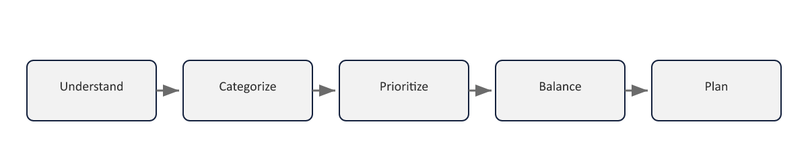

Sheet 1Titel
Project- en Programmamanagement
Niveau 2 · Deel 20: PMO, P3O en portfoliovolwassenheid
(Zelfstandig aanbiedbaar deel)
Sheet 2Een niveau hoger
Project/programma: de dingen goed doen
Portfolio (MoP): de juiste dingen doen
Sheet 3Vier vragen van MoP
1. Zijn alle projecten/programma’s nodig voor de strategie?
2. Realiseert de portfolio + BAU alle strategische doelen?
3. Is het geaggregeerde risico acceptabel?
4. Is de portfolio haalbaar en betaalbaar?
Sheet 4Vijf principes
Senior management commitment · Governance alignment · Strategy alignment
Portfolio office · Energised change culture
Sheet 5Organisatorische energie
De mate waarin een organisatie haar potentieel écht inzet
Structuren alleen zijn niet genoeg
Sheet 6Portfoliodefinitiecyclus

Understand → Categorize → Prioritize → Balance → Plan
Sheet 7Portfolioleveringscyclus
| Praktijk (portfolioleveringscyclus, §5) | P3M3-perspectief (§7) |
|---|---|
| Stakeholder engagement | Stakeholdermanagement |
| Organisatorische governance | Organisatorische governance |
| Resourcemanagement | Resourcemanagement |
| Risicomanagement | Risicomanagement |
| Financieel management | Financieel management |
| Batenmanagement | Batenmanagement |
| Management control | Management control |
Stakeholder engagement · Governance · Resources · Risico
Financiën · Baten · Management control
Sheet 8Geen toeval
Deze zeven praktijken ≈ de zeven perspectieven van P3M3
Zelfde bouwstenen, twee invalshoeken
Sheet 9P3O: vijf structuren
| Structuur | Karakter | Scope |
|---|---|---|
| Organisatie-portfoliokantoor | Permanent | Hele organisatie |
| Hub-portfoliokantoor | Permanent | Afdeling, divisie, regio of bedrijfsonderdeel |
| Programmakantoor | Tijdelijk | Eén specifiek programma |
| Projectkantoor | Tijdelijk | Eén specifiek project |
| Centre of Excellence (CoE) | Standaarden- en kennisfunctie | Methoden, sjablonen, opleiding, geleerde lessen — vaak samengehuisvest met het portfoliokantoor |
Organisatie-portfoliokantoor (permanent, hele organisatie)
Hub-portfoliokantoor (permanent, afdeling/regio)
Programmakantoor (tijdelijk) · Projectkantoor (tijdelijk)
Centre of Excellence (standaarden, methoden, training)
Sheet 10P3M3: vijf niveaus
1. Awareness — ad hoc, individuele helden
2. Repeatable — soms herhaald, niet consistent
3. Defined — gestandaardiseerd, gedocumenteerd
4. Managed — systematisch gemeten en gestuurd
5. Optimised — continue, data-gedreven verbetering
Sheet 11Zeven perspectieven, drie deelmodellen
Governance · Control · Baten · Risico · Stakeholders · Financiën · Resources
PfM3 (portfolio) · PgM3 (programma) · PjM3 (project)
Sheet 12Toegepast: Meridiaan
Vóór het Mutatieplatform: Awareness tot Repeatable
Programme Office van het Mutatieplatform: stap richting Defined
Nog geen organisatiebreed portfoliokantoor
Sheet 13Vooruitblik
Deel 21: Benefits realisation II — terug naar de hoofdcasus, overdracht aan de staande organisatie